Dziękujemy za zakupienie szablonu WordPress. Ta dokumentacja składa się z kilku części, które pokazują cały proces przygotowania i zarządzania Stroną WordPress Website od samego początku.
Czym jest WordPress CMS?
WordPress jest darmowym narzędziem do blogowania open source oraz systemem do zarządzania treścią (CMS) bazowanym na PHP oraz MySQL. Zezwala to na tworzenie Stron Internetowych i potężnych aplikacji on-line, jednocześnie nie wymaga prawie żadnych technicznych zdolności czy wiedzy do zarządzania. Wiele aspektów, włączając w to łatwość użycia i mnogość opcji, sprawiło że WordPress jest najpopularniejszym oprogramowaniem do stron internetowych jakie jest dostępne. Dowiedz się Więcej
Czym jest szablon WordPress
Szablon WordPress jest 'skórą' strony internetowej, stworzoną przy użyciu platformy WordPress CMS. Innymi słowami, możesz łatwo zmienić wygląd swojej strony internetowej WordPress instalując nowy szablon w kilku prostych krokach. W całej swojej prostocie, szablon WordPress zapewnia wszystkie niezbędne pliki źródłowe a ty masz dowolność edytowania i zmieniania go w odpowiadający potrzebom sposób.
Struktura Plików
Pakiet szablonu, jaki pobrałeś, zawiera szereg folderów. Sprawdźmy, co każdy z nich zawiera:
documentation - zawiera pliki z dokumentacją.
documentation.html - główny plik z dokumentacją. Właśnie się w nim znajdujesz :)
screenshots - zawiera zrzuty ekranu motywu. Nie do produkcji.
sources.zip - zawiera pliki źródłowe szablonu.
psd - zawiera pliki źródłowe Adobe Photoshop (.psd).
theme - zawiera pliki motywu WordPress.
CherryFramework.zip - archiwum motywu Cherry Framework. Zawiera wszystkie pliki motywu. Powinno zostać zainstalowane przez menadżera rozszerzeń WordPress.
theme####.zip - archiwum motywu (child-theme). Zawiera wszystkie pliki motywu. Powinno zostać zainstalowane przez menadżera rozszerzeń WordPress.
sample_data - zawiera pliki, która sprawią, że Twoja strona WordPress będzie wyglądała jak nasze live demo.
sample_data.xml - zawiera wszystkie przykładowe dane szablonu (posty, strony, kategorie, itd.).
widgets.json - zawiera ustawienia widgetów.
różne obrazy oraz inne pliki z mediami
manuall_install - zawiera pliki, dzięki którym Twoja strona WordPress będzie wyglądała jak nasze live demo.
uploads - zawiera obrazy motywu.
theme#####.sql - plik backup bazy danych (zawiera treść motywu).
license.txt - zawiera szczegóły licencji.
fonts_info.txt - zawiera link, skąd można pobrać czcionki użyte w szablonie.
info.txt - zawiera instrukcje jak rozpakować pliki źródłowe.
Instalacja szablonu
Instalacja szablonu nigdy nie była łatwiejsza. Proces instalacji zawiera tylko trzy proste kroki: instalacja Cherry framework, instalacja child theme oraz instalacja przykładowych danych.
Wszystkie kroki instalacji mogą być wykonane w interfejsie WordPress. Dzięki temu proces jest komfortowy i szybki.
Możesz to zweryfikować klikając na poniższy link:
Krok 1. Instalacja Cherry Framework
Zaloguj się do panelu administracyjnego WordPress (dodaj /wp-admin do nazwy swojej domeny w pasku adresowym przeglądarki).
Przejdź do menu Appearance > Themes i kliknij przycisk Add New Theme.
Kliknij na link Upload.
Kliknij przycisk Browse i przejdź do nierozpakowanego pakietu z szablonem na swoim komputerze.
Poszukaj pliku o nazwie CherryFramework.zip. Kliknij aby go zaznaczyć, następnie kliknij OK.
Kliknij przycisk Install Now i poczekaj aż instalacja zostanie zakończona.
Możesz teraz zainstalować motyw potomny (child theme): theme####.zip. Kroki są takie same:
Przejdź do menu Appearance > Themes i kliknij przycisk Add New Theme .
Kliknij na link Upload.
Kliknij przycisk Browse i przejdź do nierozpakowanego pakietu z szablonem na swoim komputerze.
Poszukaj pliku o nazwie theme####.zip (gdzie XXXX jest unikalnym numerem Twojego motywu). Kliknij aby go zaznaczyć, następnie kliknij OK.
Kliknij przycisk Install Now i poczekaj, aż instalacja się zakończy.
Kliknij link Activate aby zmienić obecny rozkład strony na motyw, który zakupiłeś.
Gratulacje, zarówno framework jak i motyw zostały zainstalowane pomyślnie!
Krok 3. Instalacja Przykładowych Danych
Aby Twoja strona WordPress wyglądała jak nasze live demo, postępuj zgodnie z instrukcją poniżej. Sugerujemy także, abyś zawsze miał plik backup .sql eksportowany ze swojej bazy danych.
UWAGA: Dla szablonów bazowanych na Cherry Framework v3.0 lub wcześniejszych, aby zainstalować przykładowe dane, musisz przesłać pliki XML oraz JSON z folderu "sample_data". Obrazy i inne pliki medialne powinny być przesyłane z folderu "manual_install\uploads". Upewnij się, że przesłałeś wszystkie obrazy z wszystkich podfolderów.
Przejdź do menu Cherry Plugin > Import Content.
Przede wszystkim zobaczysz tabelę z wymaganiami, która pokazuje czy Twój serwer hostingowy spełnia wymagania Pluginu Cherry. Prosimy skontaktować się z dostawcą hostingu, jeśli wystąpia jakieś ostrzeżenia.
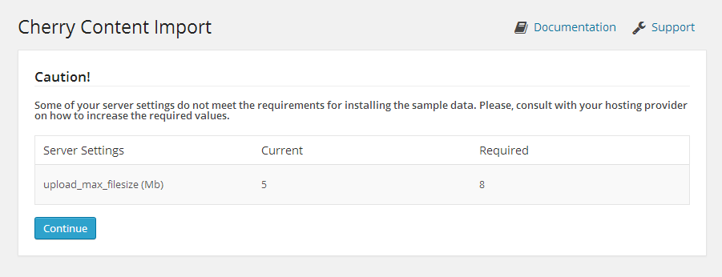
Jeśli wszystkie ustawienia serwera są OK, zobaczysz ekran przesyłania. Otwórz folder "theme/sample_data" z pakietu szablonu i prześlij wszystkie pliki do WordPress. Możesz przesłać wszystkie pliki, zaznaczając je w folderze "theme/sample_data" (CTRL+A or Command+A) i przeciągając je do obszaru przesyłania.
Upewnij się, że przesłałeś wszystkie pliki z folderu sample_data, włączając w to pliki .JSON oraz .XML. Po skończeniu przesyłania kliknij przycisk "Continue Install" aby kontynuować.
UWAGA: .JSON oraz .XML są wymagane, aby kontynuować instalowanie przykładowych danych. Przycisk Continue Install będzie dostępny tylko w wypadku, gdy zarówno pliki .XML jak i .JSON zostały przesłane.
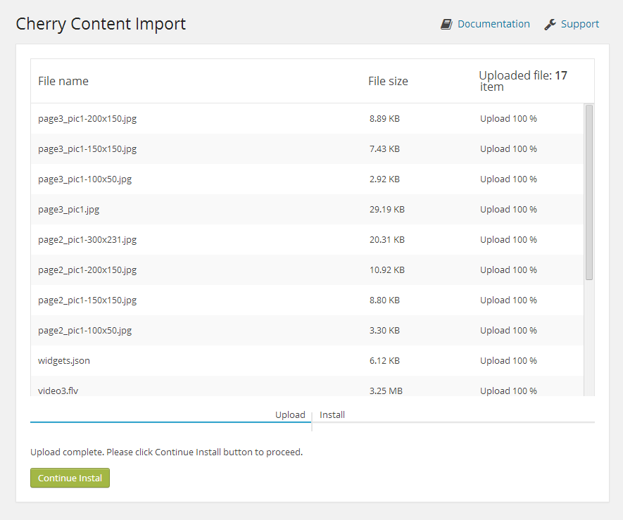
Kliknięcie na przycisk "Continue Install" aktywuje proces instalacji przykładowych danych. Poszczególne etapy instalacji mogą zająć trochę czasu, w zależności od ustawień serwera. Bądź cierpliwy.
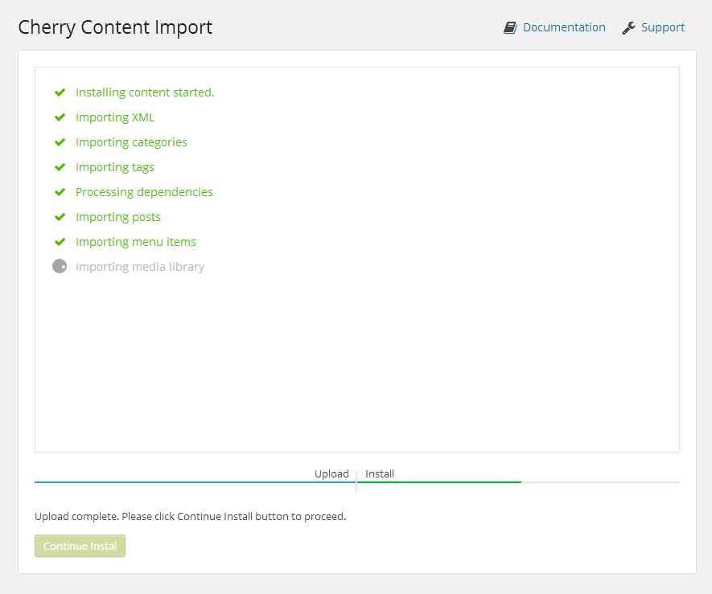
Gratulacje! Pomyślnie zainstalowałeś Motyw Cherry WordPress. Możesz go teraz sprawdzić.
Początek
Przygotowanie
Zanim zaczniesz dokonywanie zmian ustawień swojej strony WordPress, upewnij się, że jesteś w pełni przygotowany. Wykonaj następujące kroki przygotowawcze:
Edytowanie oprogramowania
Aby komfortowo pracowało się z szablonem WordPress, zalecamy pobranie wszystkich wymaganych aplikacji. Możesz sprawdzić listę wymaganego oprogramowania na stronie poglądowej szablonu. Wymagania mogą się różnić w zależności od szablonu, przedstawimy generalnie co jest potrzebne:
Po pierwsze, potrzebujesz odpowiednich aplikacji do rozpakowania zabezpieczonego hasłem archiwum sources_#########.zip. Możesz użyć WinZip 9+ (Windows) lub Stuffit Expander 10+ (Mac).
Możesz również potrzebować aplikacji Adobe Photoshop. Służy ona do edytowania plików .PSD i jest niezbędna, jeśli chcesz edytować grafiki i obrazy szablonu.
Aby edytować pliki źródłowe z kodem szablonu, będziesz potrzebował edytora kodu, jak Adobe Dreamweaver, Notepad++, Sublime Text, itp.
Aby przesłać pliki do serwera hostingowego, będziesz potrzebował FTP Managera jak Total Commander, FileZilla, CuteFTP, itp.
Hosting
Jako że WordPress CMS jest aplikacją bazowaną na PHP/MySQL, musisz przygotować hosting do używania WordPressu.
Jeśli masz tzw. live hosting, upewnij się że pasuje do Wymagań oprogramowania WordPress i jest gotowe do użycia ze stronami WordPress.
W innym wypadku, możesz używać WordPress lokalnie na swoim komputerze przy użyciu serwera lokalnego. Aby stworzyć serwer lokalny, użyj aplikacji localhost, takiej jak WAMP, AppServ, MAMP, itp. Każda z nich może być łatwo zainstalowana jak każdy inny program i używana do uruchomienia WordPress.
Sprawdź poniższe poradniki jak skonfigurować lokalne środowisko programowania:
Pobierz odpowiednią wersję silnika WordPress. Na stronie poglądowej szablonu, w sekcji z wymaganiami, możesz sprawdzić wymaganą wersję WordPress. Upewnij się, że pobierasz prawidłową.
Silnik WordPress może być pobrany z oficjalnej strony WordPress.org Pobierz WordPress. Jeśli potrzebujesz wcześniejszej wersji, możesz kliknąć link z Archiwum Wersji.
Po pobraniu, musisz wypakować pliki z pakietów z silnikiem i szablonem. Aby rozpakować pliki z pakietu silnika WordPress ZIP, musisz użyć managera archiwum, obsługującego pliki ZIP.
Po rozpakowaniu plików, musisz przesłać pliki silnika WordPress oraz foldery do serwera hostingowego.
Wszystkie te pliki i foldery powinny zostać przesłane do Twojego serwera hostingowego. Pliki z silnikiem powinny zostać przesłane do katalogu PUBLIC_HTML lub WWW na serwerze.
Jeśli nie widzisz katalogów PUBLIC_HTML lub WWW na serwerze hostingowym, skontaktuj się ze swoim dostawcą hostingu i wybierz gdzie przesłać pliki strony.
Sprawdź następujące poradniki jak przesyłać pliki do serwera:
W tym kroku musisz stworzyć bazę danych, która będzie używana przez silnik WordPress.
Możesz stworzyć nową bazę danych przy użyciu narzędzi do zarządzania bazami danych, znajdujących się w panelu kontrolnym Twojego hostingu (zazwyczaj PhpMyAdmin).
Przy użyciu narzędzia phpMyAdmin, będziesz w stanie stworzyć nową bazę danych w 3 prostych krokach (sprawdź slajdy poniżej):
Kliknij na przycisk Database z górnego menu nawigacyjnego aby przejść do listy baz danych.
Wprowadź nazwę bazy danych w polu "Create new database".
Kliknij przycisk Create po prawej stronie.
Twoja baza danych znajduje się na liście. Kliknij na jej nazwę, aby uzyskać dostęp do bazy danych.
1. Kliknij na przycisk Database aby przejść do listy baz danych.
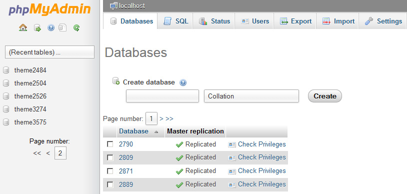
2. Wprowadź nazwę bazy danych.
3. Kliknij przycisk Create.
4. Twoja baza danych znajduje się na liście. Kliknij na jej nazwę, aby uzyskać dostęp do bazy danych.
Jeśli masz problemy z zainstalowaniem przykładowych danych, wykonaj następujące instrukcje poniżej.
UWAGA: Importowanie pliku do bazy danych nadpisze obecną zawartość i ustawienia strony. NIE importuj pliku SQL jeśli chcesz zachować istniejącą zawartość strony.
UWAGA: Zawsze posiadaj back up swojej bazy danych przed dokonaniem jakichkolwiek modyfikacji.
Zauważ, że prefix tabel bazy danych WordPress powinien być wp_.
Aby Twoja strona WordPress wyglądała jak nasze live demo, wykonaj następujące instrukcje poniżej.
Upewnij się, że motyw został zainstalowany zgodnie z tymi instrukcjami.
Skopiuj folder "uploads" (znajdujący się w folderze theme/manual_install/ pakietu szablonu) do folderu /wp-content/ w Twoim FTP.
Otwórz plik theme####.sql znajdujący się w folderze theme/manual_install/ w jakimkolwiek edytorze tekstu (preferowany Dreamweaver lub Notepad) i zamień wszystkie "your_website_url_here" na URL Twojej strony, używając opcji Find and Replace (użyj kombinacji Ctrl+H). Np.: http://www.mywebsite.com
Upewnij się, że nie masz slasha "/" na końcu adresu oraz że url zaczyna się od://www.
Zapisz zmiany i zamknij plik.
Teraz możesz importować plik zrzutu (dump file), używając narzędzia phpMyAdmin lub innego do zarządzania bazami danych.
Jeśli jest problem z zainstalowaniem z poziomu panelu administracyjnego, tu jest alternatywny sposób.
Instalowanie Przykładowych Danych przez FTP:
Aby użyć tej metody, musisz mieć dostęp do plików strony WordPress na FTP przez Managera Plików Twojego panelu kontrolnego hostingu lub przez klienta FTP jak Filezilla, CuteFTP, Total Commander, itp.
Jeśli zainstalowałeś motyw przy użyciu instalacji przykładowych danych lub instalacji manualnej a motyw wygląda inaczej niż Live demo, otwórz Opcje Cherry i kliknij "Restore Defaults."
Rozpakuj pliki CherryFramework.zip oraz theme####.zip do jakiegokolwiek folderu na swoim dysku twardym (najpierw, kliknij prawym przyciskiem myszy na każdym z plików .zip, wybierz Unzip do CherryFramework oraz theme####, dzięki temu będziesz miał dwa foldery, nazywające się CherryFramework oraz theme####).
Prześlij foldery CherryFramework oraz theme#### do katalogu /wp-content/themes/ na Twoim serwerze FTP.
Zaloguj się do panelu administracyjnego WordPress (dodaj /wp-admin po nazwie domeny w pasku adresowym przeglądarki).
Przejdź do menu Appearance > Themes.
W sekcji Available Themes znajdź theme#### i aktywuj go, klikając przycisk Activate.
Instalacja Pluginu
Po zainstalowaniu i aktywowaniu motywu, możesz zainstalować dodatkowe pluginy:
Gdy motyw zostanie aktywowany, w górnym lewym rogu zauważysz informację o możliwości zainstalowania dodatkowych pluginów. Kliknij na link Begin installing plugin .
Możesz również instalować pluginy z Dashboardu, przejdź do Appearance- > Install Plugins.
Sprawdź wymagane pluginy.
W menu Bulk Actions wybierz Install i kliknij Apply.
Pluginy Motywu:
Plugin Cherry
Uwaga: Instalacja i aktywowanie Pluginu Cherry jest wymagane do poprawnego działania skrótów oraz widgetów. Plugin Cherry jest instalowany i aktywowany domyślnie w trakcie instalacji Cherry Framework.
Pobierz:https://github.com/CherryFramework/CherryFramework/raw/master/includes/plugins/cherry-plugin.zip Opis: Zespół Cherry stworzył Cherry framework, który można nazwać perfekcyjnym, ale zawsze szukamy lepszych rozwiązań. Poznaj Plugin Cherry. Jest to rozszerzenie naszego Cherry framework, gdzie znajdziesz wszystkie skróty oraz widgety, jakich kiedykolwiek będziesz potrzebował. Plugin jest w pełni kompatybilny z każdym motywem WordPress bazowanym na Cherry Framework. Jak dotąd, plugin jest w wersji beta, ale mamy zamiar nadal go ulepszać, aby dostarczyć jeszcze lepsze opcje.
Pobierz:http://wordpress.org/plugins/jigoshop/ Opis: Pełen opcji plugin eCommerce do WordPress, zapewniający świetną wydajność oraz możliwości dopasowania do wymagań.
Pobierz:http://wordpress.org/plugins/buddypress/ Opis: Social networking w pudełku. Zbuduj sieć społecznościową dla swojej firmy, szkoły, drużyny sportowej lub niszowej społeczności.
Niektóre kraje mają problemy z połączeniem się z serwerami Google. Może to powodować problemy loading Google Fonts. Aby rozwiązać te problemy wykonaj następujące czynności:
Przed aktualizacją Framework, zalecamy utworzyć kopię zapasową aktualnej wersji.
Kopia zapasowa
Możesz utworzyć kopię zapasową zarówno dla Cherry Framework jak i motywu child theme. Możesz to zrobić w sekcji "Cherry Options > Data management" w panelu administracyjnym WordPress.
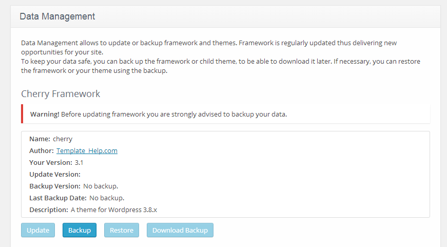
Kopia zapasowa jest prosta do wykonania przez kliknięcie przycisków "Backup" w części Cherry Framework oraz child theme.
Możesz znaleźć archiwum z Twoim frameworkiem lub child theme w folderze /wp-content/themes_backup/.
Możesz ją również pobrać, klikając przycisk "Download backup". Jeśli wystąpią jakieś problemy, możesz przeinstalować framework przy użyciu zakładek Appearance -> Themes -> Install Themes -> Upload.
Aktualizacja
Aby zaktualizować Cherry Framework, musisz wykonać następujące czynności:
W panelu administracyjnym otwórz zakładkę "Cherry Options > Data management".
Kliknij przycisk Update w części Cherry Framework
Poczekaj aż proces się zacznie.
Resztę Cherry Framework wykona we własnym zakresie.
Szablony Stron oraz Sidebarów
UWAGA: Konieczne jest edytowanie stylów w pliku style.less. Ponieważ opcje styli są tworzone od nowa, główny plik main-style.css jest nadpisywany po zapisie.
Szablony Strony
Default Template (domyślny szablon strony z pozycją sidebara)
Full Width Page (szablon strony z jedną kolumną, bez sidebara)
Home Page (szablon strony używany dla Strony Startowej)
Filter Folio 2 cols (szablon strony dla postów w stylu galerii/portfolio wyświetlanych w 2 kolumnach)
Filter Folio 3 cols (szablon strony dla postów w stylu galerii/portfolio wyświetlanych w 3 kolumnach)
Filter Folio 4 cols (szablon strony dla postów w stylu galerii/portfolio wyświetlanych w 4 kolumnach)
Testimonials (szablon strony do wyświetlania postów z referencjami)
FAQs (szablon strony do wyświetlania postów z FAQ)
Archives (szablon strony do wyświetlania archiwum)
Pozycja Sidebara
Sidebar - pola znajdujące się po prawej/lewej stronie strony
Footer Area 1,2,3,4 (opcjonalnie) - pola znajdujące się na dole strony
Zaloguj się do Panelu Administracyjnego WordPress (tzw. Dashboard).
Kliknij na zakładkę Posts.
Aby wybrać format posta, sprawdź okienko Format.
Uwaga: Niektóre z formatów mają swoje własne opcje. Ich ustawienia pojawią się pod edytorem posta.
Poniżej znajduje się lista dostępnych formatów postów z opisem i ustawieniami.
Standardowy Format
Regularny, standardowy post z następującymi polami:
Post title - tytuł posta
Post content - treść posta
Categories - kategorie posta
Tags - tagi posta
Featured Image - obrazek w poście
i inne pola, które mogą być włączone w sekcji Screen Options zlokalizowanej w górnym prawym rogu.
Standardowy Format
Poboczny Format
To jest uproszczona wersja standardowego formatu. Innymi słowy, ma tylko pole z treścią posta, bez konieczności dodawania nazwy posta i innych pól. To jest tak zwany post-note.
Poboczny Format
Galeria
Główną cechą tego formatu jest możliwość dodawania nielimitowanej liczby obrazów.
Dodawanie Formatu Galeria:
Kliknij na przycisk Add Media.
Aby dodać obrazy ze swojego dysku twardego, kliknij i przeciągnij pliki do wyskakującego okna lub kliknij Select Files, aby wybrać obraz do przesłania z Twojego komputera.
Gdy obrazy zostaną przesłane, wszystkie się pokażą w Media Library. Wybierz Uploaded to this post, aby zobaczyć dodane obrazy.
Gdy skończysz edytowanie, możesz zamknąć Media Library. Przesłane obrazy zostaną dodane automatycznie.
Format galeria ma również wszystkie standardowe pola (jak tytuł, treść, kategorie, itp.) tak jak standardowy format.
Format z Linkiem
Format z Linkiem
Po wybraniu formatu z Linkiem otrzymasz dodatkowe pole na URL, gdzie będziesz musiał podać (URL) do strony docelowej. Tytuł posta będzie użyty jako tekst linka.
Jeśli wypełnisz pole z treścią posta, będzie ona użyta jako opis strony docelowej.
Format z Obrazem
Format z Obrazem
Format z Obrazem jest bazowany na pojedynczym obrazie przesłanym przez opcję Featured Image. Po wybraniu Formatu z Obrazem, będziesz miał możliwość wyłączenia opcji lightbox, wybierając odpowiednie ustawienie w menu Enable Lightbox w opcjach obrazu.
Format z Cytatem
Format z Cytatem
A Format z Cytatem służy jako tzw. cytowanie postów. Używane jest do publikowania cytatów.
Po wybraniu tego formatu otrzymasz dodatkowe pole The Quote - generalnie treść cytatu oraz pole Author - dane autora cytatu.
Format z Audio
Format z Audio
Format z Audio jest używany do publikowania treści audio.
Po wybraniu tego formatu będziesz miał następujące dodatkowe opcje:
Title - nazwa nagrania
Artist - wykonawca nagrania
Audio Format - format nagrania audio
Audio URL - bezpośredni link do nagrania
Format z Video
Format z Video
Format z Video jest używany do publikowania treści video.
Po wybraniu tego formatu będziesz miał następujące dodatkowe opcje:
Title - nazwa klipu video
Artist - wykonawca klipu video
URL #1 - bezpośredni link do klipu video w formacie m4v
URL #2 - bezpośredni link do klipu video w formacie ogv
Embedded Code - używane do embedowania zewnętrznych klipów video, np. z youtube, vimeo, itp.
Tworzenie postów ze sliderem
Slajdy są generalnie postami typu custom, czyli różnią się od typowych postów, jak posty na blogu. Dzięki temu możemy zarządzać zawartością strony naprawdę w prosty sposób.
Tworzenie postu ze sliderem
Zaloguj się do Panelu Administracyjnego WordPress (tzw. Dashboard).
Kliknij na zakładkę Slider.
Następnie kliknij na zakładkę Add New.
Podaj tytuł slidera.
Prześlij obraz przy użyciu opcji Featured Image (kliknij link Set featured image).
Możesz użyć następujących pól dla slidera:
Caption - pole do podpisu slajdu.
URL - pole do URL slajdu (można podać zewnętrzny link).
Po skończeniu, kliknij przycisk Publish.
Dodawanie postów z Portfolio
Portfolio są zazwyczaj postami typu custom http://codex.wordpress.org/Post_Types#Custom_Types, czyli różnią się od typowych postów. Dzięki temu możemy zarządzać zawartością strony naprawdę w prosty sposób.
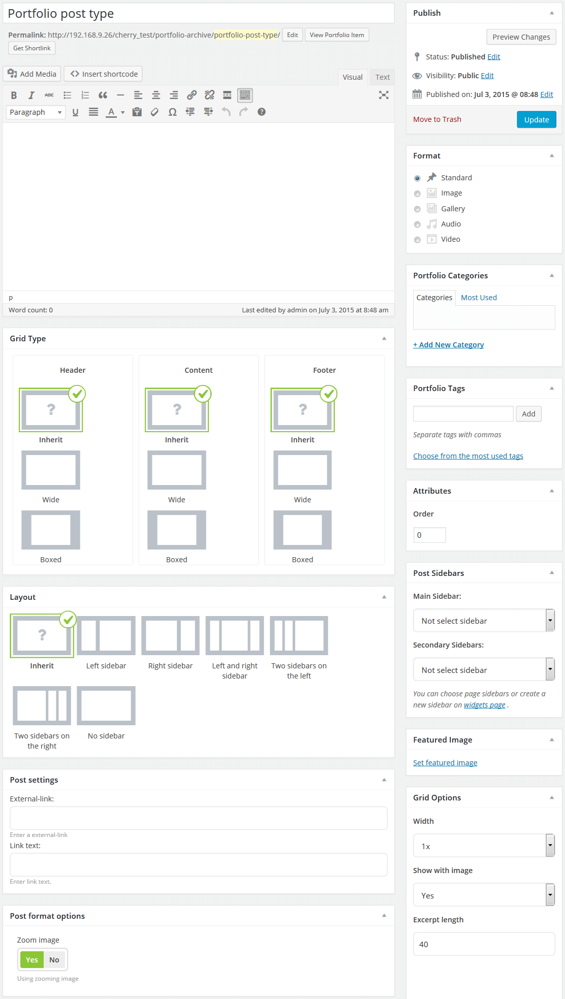
Dodawanie postów z Portfolio
Zaloguj się do Panelu Administracyjnego WordPress (tzw. Dashboard).
Kliknij na zakładkę Portfolio.
Następnie kliknij na zakładkę Add New.
Wypełnij wymagane pola (title, content).
Prześlij obraz przy użyciu opcji Featured Image (kliknij link Set featured image).
Po skończeniu, kliknij przycisk Publish.
Wybieranie formatu posta z Portfolio
Tworzenie posta z portfolio w tym motywie zezwala na wybranie jednego z dostępnych typów posta.
Image - domyślny format z galerią. Wyświetla tylko powiązane obrazy.
Slideshow - galeria jest wyświetlona jako pokaz slajdów. Może zawierać nielimitowaną ilość obrazów przesłanych i dołączonych do posta.
Grid Gallery - obrazy z posta są wyświetlone jako galeria. Może zawierać nielimitowaną ilość obrazów przesłanych i dołączonych do posta.
Video - w tym typie możesz dodać klip video z różnych stron (YouTube, Vimeo, itp.).
Audio - po wybraniu tego typu, możesz dodać link do nagrania audio.
Dodawanie postów z Referencjami
Dodawanie postów z Referencjami
Zaloguj się do Panelu Administracyjnego WordPress (tzw. Dashboard).
Kliknij na zakładkę Testimonials.
Następnie kliknij na zakładkę Add New.
Wypełnij wymagane pola (title, content).
Prześlij obraz przy użyciu opcji Featured Image (kliknij link Set featured image).
Możesz wypełnić następujące pola dla tego typu postów:
Name - nazwa autora
URL - link do autora
Info - dodatkowe informacje o autorze.
Kliknij przycisk Publish.
Dodawanie postów z FAQ
Dodawanie postów z FAQ
Zaloguj się do Panelu Administracyjnego WordPress (tzw. Dashboard).
Kliknij na zakładkę FAQs.
Następnie kliknij na zakładkę Add New.
Jako że jest to typ posta pytanie/odpowiedź, tytuł posta jest pytaniem a treść posta jest odpowiedzią.
Kliknij Publish.
Dodawanie postów Nasz Zespół
Dodawanie postów Nasz Zespół
Zaloguj się do Panelu Administracyjnego WordPress (tzw. Dashboard).
Kliknij na zakładkę Our Team.
Następnie kliknij na zakładkę Add New.
Wypełnij wymagane pola (title, content).
Prześlij obraz przy użyciu opcji Featured Image (kliknij link Set featured image).
Możesz wypełnić następujące pola dla tego typu postów:
Position - pozycja/rola danej osoby
Info - dodatkowe informacje.
Kliknij Publish.
Strona z Portfolio
Tworzenie strony z Portfolio
Tworzenie strony z Portfolio
Strony z Portfolio mogą być tworzone przy pomocy szablonów stron.
Zaloguj się do Panelu Administracyjnego WordPress (tzw. Dashboard).
Kliknij na zakładkę Pages.
Następnie kliknij na zakładkę Add New.
Wpisz nazwę strony, na przykład Strona Portfolio.
Wybierz szablon strony (Filter Folio 2 kol, Filter Folio 3 kol lub Filter Folio 4 kol w menu Page Attributes).
Następnie, kliknij przycisk Publish.
Możesz stworzyć kategorię strona z portfolio, używając pola Category Include. Musisz wpisać nagłówek kategorii, jaki chcesz żeby był wyświetlany.
Shortcodes
Shortcode jest potężnym narzędziem do tworzenia treści http://codex.wordpress.org/Shortcode. Shortcodes są proste w użyciu. Przede wszystkim, upewnij się że tryb edytowania jest ustawiony na Visual.
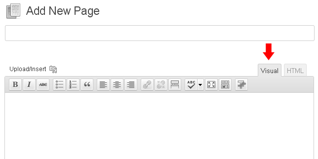
Następnie kliknij na przycisk, aby mieć dostęp do shorcodes. Teraz wybierz shortcode, jaki chcesz użyć.
Wszystkie dostępne shortcodes są podzielone na następujące grupy:
Dynamiczne - używane do treści (posty, typy postów, tagi, itp.)
Kolumny - różne kolumny do tworzenia siatki.
Elementy - dodatkowe elementy do tworzenia treści.
Inne - dodatkowe elementy do tworzenia zaawansowanej/kompletnej treści.
Opis: wyświetla ostatnie posty, które mogą być konfigurowane następującymi opcjami (typ posta, liczba postów, format posta, długość fragmentu (excerpt), nazwa przycisku i inne).
Ostatnie Referencje
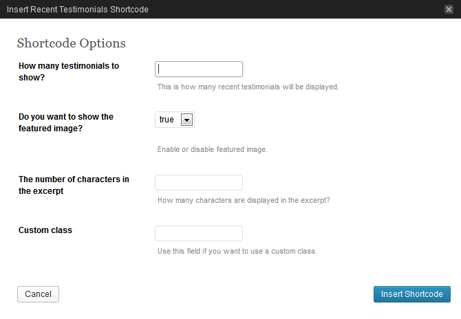
[recenttesti num="2" thumb="true"]
Opis: wyświetla określoną liczbę postów z Referencjami, zawiera opcję pokazania/ukrycia obrazów posta oraz zarządzanie liczbą słów.
Opis: używane do wyświetlania informacji w oknach zawierających tytuł, ikonę, tekst, przycisk. Główną cechą tego shortcode jest obecność zainstalowanych ikon.
Opis: używany do wyświetlania głównych informacji o stronie internetowej, promocjach, itd. Zazwyczaj umieszczone na głównej stronie, zaraz za nagłówkiem.
Kategorie
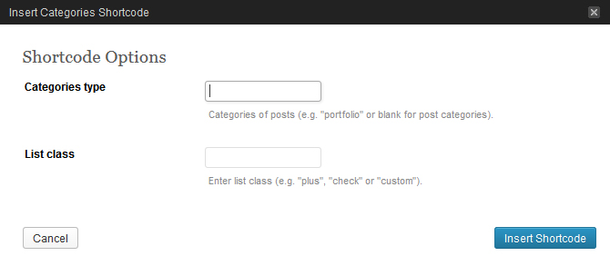
[categories class="plus"]
Opis: używany do wyświetlania kategorii.
Tagi
[tags]
Opis: używany do wyświetlania tagów.
Kolumny
Kolumny Siatka (szerokość 1-12)
[span#] [/span#]
Opis: używany do tworzenia elementów siatek, gdzie # jest liczbą od 1 do 12, definiującą szerokość elementów.
Opis: używane do umieszczania podglądu video, które może być przesłane z innych stron (youtube, vimeo) lub z Twojej strony internetowej (własne hostowanie).
Okienka z Alertem (wiadomość, info, powodzenie, niebezpieczeństwo)
Opis: używane do wyświetlania harmonii - zawinięte panele z tytułami.
Tabela
[table td1="#" td2="Title" td3="Value"] [td1] 1 [/td1] [td2] some title 1 [/td2] [td3] some value 1 [/td3] [/table]
Opis: używane do wyświetlania tabeli.
Mapa Google
[map src="#" width="300" height="200"]
Opis: używane do wyświetlania map Google. Aby shortcode działał, musisz umieścić link z lokalizacją z Google.
Tabela z cenami
[chp_pricing_table columns="3" labelled="yes"]
[chp_pricing_column_label title="Features"]
[chp_pricing_row_label odd="true"] Etykieta 1 [/chp_pricing_row_label]
[chp_pricing_row_label] Etykieta 2 [/chp_pricing_row_label]
[chp_pricing_row_label odd="true"] Etykieta 3 [/chp_pricing_row_label]
[chp_pricing_row_label] Etykieta 4 [/chp_pricing_row_label]
[/chp_pricing_column_label]
[chp_pricing_column title="Column 1" price="100" currency_symbol="$" interval="Per Month"]
[chp_pricing_row_label] Etykieta 1 [/chp_pricing_row_label]
[chp_pricing_row odd="true"] Twój tekst tutaj [/chp_pricing_row]
[chp_pricing_row_label] Etykieta 2 [/chp_pricing_row_label]
[chp_pricing_row] Twój tekst tutaj [/chp_pricing_row]
[chp_pricing_row_label] Etykieta 3 [/chp_pricing_row_label]
[chp_pricing_row odd="true"] Twój tekst tutaj [/chp_pricing_row]
[chp_pricing_row_label] Etykieta 4 [/chp_pricing_row_label]
[chp_pricing_row] Twój tekst tutaj [/chp_pricing_row]
[button text="Sign Up" link="#" style="default" size="normal" target="_self" display="inline" icon="no"]
[/chp_pricing_column]
[chp_pricing_column title="Column 2" highlight="true" highlight_reason="Most Popular" price="200" currency_symbol="$" interval="Per Month"]
[chp_pricing_row_label] Etykieta 1 [/chp_pricing_row_label]
[chp_pricing_row odd="true"] Twój tekst tutaj [/chp_pricing_row]
[chp_pricing_row_label] Etykieta 2 [/chp_pricing_row_label]
[chp_pricing_row] Twój tekst tutaj [/chp_pricing_row]
[chp_pricing_row_label] Etykieta 3 [/chp_pricing_row_label]
[chp_pricing_row odd="true"] Twój tekst tutaj [/chp_pricing_row]
[chp_pricing_row_label] Etykieta 4 [/chp_pricing_row_label]
[chp_pricing_row] Twój tekst tutaj [/chp_pricing_row]
[button text="Sign Up" link="#" style="default" size="normal" target="_self" display="inline" icon="no"]
[/chp_pricing_column]
[chp_pricing_column title="Column 3" price="300" currency_symbol="$" interval="Per Month"]
[chp_pricing_row_label] Etykieta 1 [/chp_pricing_row_label]
[chp_pricing_row odd="true"] Twój tekst tutaj [/chp_pricing_row]
[chp_pricing_row_label] Etykieta 2 [/chp_pricing_row_label]
[chp_pricing_row] Twój tekst tutaj [/chp_pricing_row]
[chp_pricing_row_label] Etykieta 3 [/chp_pricing_row_label]
[chp_pricing_row odd="true"] Twój tekst tutaj [/chp_pricing_row]
[chp_pricing_row_label] Etykieta 4 [/chp_pricing_row_label]
[chp_pricing_row] Twój tekst tutaj [/chp_pricing_row]
[button text="Sign Up" link="#" style="default" size="normal" target="_self" display="inline" icon="no"]
[/chp_pricing_column]
[/chp_pricing_table]
Opis: używane do wyświetlania tabeli z cenami.
Audio / Video
Opis: WordPress 3.6+ wspiera umieszczanie klipów video z YouTube lub Vimeo, lecz jeśli chcesz uruchomić plik video lub audio, jak MP3 lub MP4, który został przesłany do serwera, musisz umieścić jakiś player, dzięki czemu plik będzie w formie media a nie zwykłego linku na Twojej stronie. Czytaj Więcej
Proces jest podobny do umieszczania obrazku w treści posta:
Dodaj lub edytuj stronę lub post.
Kliknij na miejsce w treści, gdzie chcesz umieścić player, następnie kliknij Add Media powyżej edytora treści.
Kliknij Upload Files.
Prześlij plik audio lub video.
Upewnij się, że wybrany plik został przesłany, następnie w menu Attachment Display Settings, ustaw Embed or Link na "Embed Media Player."
Kliknij Insert into page.
WordPress umieści shortcode dla audio lub video, który zostanie zmieniony na player.
Możliwe, że przesłałeś plik audio lub video d innego serwera, na przykład Amazon S3 lub serwisu hostingowego plików. Po prostu podaj URL do pliku media. Na przykład, chcesz umieścić klip video z YouTube. Po prostu wklej go do treści i player YouTube pojawi się w tym miejscu po publikacji. Upewnij się, że URL nie jest linkowany.
http://www.youtube.com/watch?v=mmRPSoDrrFU
Ten prosty link staje się:
Pluginy i Widgety
Pluginy
Uwaga: Twój motyw może nie zawierać niektórych pluginów podanych niżej.
Wyświetla ostatnie komentarze w bardziej przystępnym formacie. Ten widget posiada następujące opcje:
Title: - Tytuł Widgeta
Number of comments to show: - Liczba komentarzy do wyświetlenia.
Cherry - Recent Posts
Wyświetla ostatnie posty. Możesz również wyświetlić wybrane posty z danej kategorii i dodać link czytaj więcej. Ten widget posiada następujące opcje:
Title: - Tytuł Widgeta
Category Slug: - Kategoria Posta.
Post Format: - Wybierz Format Posta, w jakim będzie wyświetlany.
Post Order: - Możesz wybrać kolejność wyświetlania postów.
Posts per page: - Liczba postów do wyświetlenia.
Excerpt length (words): - długość fragmentu (liczba słów).
Link Text: - Tekst Linka, wyświetlany po Ostatnich Postach.
Link Url: - Link URL, wyświetlany po Ostatnich Postach.
Cherry - Advanced Cycle
Ten wielofunkcyjny widget używany jest do wyświetlania różnego typu postów, włączając w to posty z bloga. Z dużą możliwością zmian, posiada funkcję zmiany ustawień wyświetlania. Ten widget posiada następujące opcje:
Title: - Tytuł Widgeta
Posts type: - wybierz typ postów
Number of posts to show: - liczba postów number of posts
Sort by: - opcja wyboru postów
Reverse sort order (ascending): - odwróć kolejność
Show number of comments - pokaż daną liczbę komentarzy
Show meta - pokaż meta
Container class: - wrapper. Ustawiony domyślnie na featured_custom_posts.
Show post title - pokaż tytuł posta
Date as title - do używania daty zamiast tytułu
Before title: - ustalony HTML-markup przed tytułem
After title: - ustalony HTML-markup po tytule
Show post excerpt - pokaż fragment
Excerpt length (words) - długość fragmentu (liczba słów)
Excerpt as link - zamień fragment w link
Show "More" link - pokaż link Więcej po poście
Link text: - tekst linka
Link class: - CSS-class dla linka Więcej
Show post thumbnail - pokaż miniaturę dla posta
Width: - szerokość obrazka
Height: - wysokość obrazka
Thumbnail as link - zamień obrazek na link
Show global link to all posts - Pokaż globalnego linka do wszystkich postów
Link text: - tekst danego linka
Link URL: - URL linka.
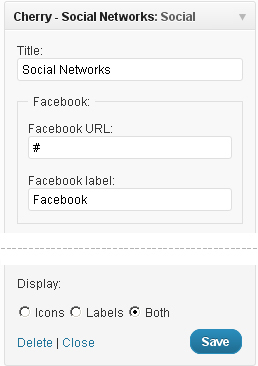
Cherry - Social Networks
Widget pozwalający linkowanie do Twoich kont w sieciach społecznościowych. Ten widget posiada następujące opcje:
Title: - Tytuł Widgeta
Facebook URL, Twitter URL, Flickr URL, itp. - linki do Twoich kont w Sieciach Społecznościowych
Display: sposób w jaki ikony są wyświetlane
Icons - tylko ikony
Labels - tylko tekst
Both - ikony i tekst.
Cherry - 125x125 Ads
Ten widget pozwala wyświetlać zestaw banerów. Ten widget posiada następujące opcje:
Title: - Tytuł Widgeta
Image Ad link: - ścieżka do obrazka na banerze
Add link: - link do baneru.
Cherry - Flickr
Ten widget pozwala wyświetlać zdjęcia z Twojej galerii na Flickr. Ten widget posiada następujące opcje:
Title: - Tytuł Widgeta
Flickr ID: - Twoje ID flickr
Images count: - liczba zdjęć do pokazania
Link Text: - tekst linka pod zdjęciami flickr.
Cherry - vCard
Ten widget pozwala wyświetlić informację o Twojej firmie lub o Tobie. Ten widget posiada następujące opcje:
Title (optional): - Tytuł Widgeta
Street Address: - ulica
City/Locality: - miasto lub lokalizacja
State/Region: - województwo lub region
Zipcode/Postal Code: - kod pocztowy
Telephone: - numer telefonu
Email: - adres email.
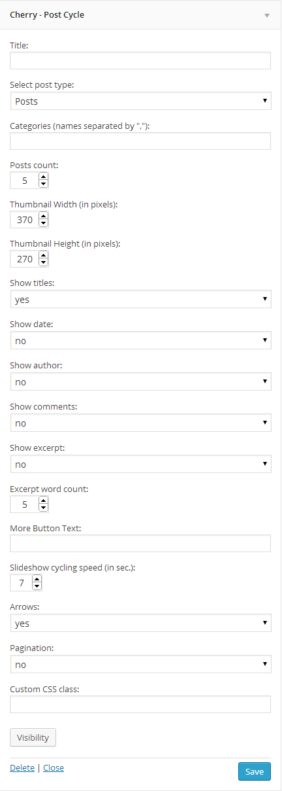
Cherry - Post Cycle
Ten widget pozwala wyświetlić zestaw postów. Ten widget posiada następujące opcje:
Title (optional): - Tytuł Widgeta
Post type: - Wybierz format posta
Categories: - Wybierz kategorie, z których będą wyświetlane posty
Posts count: - liczba wyświetlanych postów
Thumbnail Width (in pixels): - szerokość miniatury posta
Thumbnail Height (in pixels): - wysokość miniatury posta
Show titles: - wyświetl tytuły postów
Show date: - wyświetl datę posta
Show author: - wyświetl autora
Show comments: - wyświetl komentarze do posta
Show excerpt: - wyświetl fragment posta
Excerpt word count: - liczba słów wyświetlonych we fragmencie
More Button Text: - tekst przycisku "Więcej"
Slideshow cycling speed (in sec.): - prędkość pokazu slajdów w milisekundach
Arrows: - wyświetl strzałki slidera
Pagination: - wyświetl paginację slidera
Custom CSS class: - klasa widgeta
Cherry - Banner
Widget używany do wyświetlania banerów. Ten widget posiada następujące opcje:
Title (optional): - Tytuł Widgeta
Banner description: - Opis banera
Image URL: - źródło obrazka w tle
Fill image: - Opcja do zmieniania między dwoma sposobami wyświetlania banera: dopasowanie obrazka, aby pasował do wymiarów banera jako tło lub umieszczanie obrazka powyżej zawartości banera
Link URL: - link URL
Custom CSS class: - klasa widgeta
Cherry - Facebook Like Box Widget
Widget używany do wyświetlania stron z Facebooka. Ten widget posiada następujące opcje:
Show image description: - włącz/wyłącz opis obrazka
Show comments number: - włącz/wyłącz liczbę komentarzy
Show likes number: - włącz/wyłącz liczbę like'ów
Show image publication date: - włącz/wyłącz datę opublikowania obrazka
Show Image URL: - włącz/wyłącz URL Obrazka
User account button text: - link do profilu Instagram
Custom CSS class: - klasa widgeta
Cherry Options
Motyw posiada opcję Ustawień. Ustawienia te zezwalają na zmianę palety kolorów motywu, kolejność, włączanie/wyłączanie opcji i wiele innych rzeczy. Aby użyć tych ustawień, przejdź do Appearance → Cherry Options.
Ogólne
Body styling - możesz wybrać kolor oraz wzór tła.
Layout Style: - możesz wybrać układ strony(szerokość/styl okien)
Header styling: - tło nagłówka i kolor wypełnienia.
Buttons and links color - kolor przycisków oraz linków.
Buttons and links hover color - kolor przycisków oraz linków przy podświetleniu.
Body Text - Możesz wybrać preferowaną czcionkę głównego tekstu. Następujące opcje są dostępne:
Rozmiar czcionki
Wysokość linii
Rodzina Czcionki
Styl czcionki (normalna, pogrubiona, kursywa)
Zestaw Znaków (Łacińskie, Greka, Cyrylica, itp.)
Kolor
Uwaga: Czcionka zaznaczona gwiazdką (*) oznacza, że zostanie pobrana z biblioteki Google Web Fonts.
H1-H6 Headings - Możesz wybrać preferowaną czcionkę na nagłówki oraz tytuły. Następujące opcje są dostępne:
Rozmiar czcionki
Wysokość linii
Rodzina Czcionki
Styl czcionki (normalna, pogrubiona, kursywa)
Zestaw Znaków (Łacińskie, Greka, Cyrylica, itp.)
Kolor
Uwaga: Czcionka zaznaczona gwiazdką (*) oznacza, że zostanie pobrana z biblioteki Google Web Fonts.
Display search box? - pokaż/ukryj pasek wyszukiwarki w nagłówku.
Display breadcrumbs? - pokaż/ukryj nawigację na stronach.
Custom CSS - jeśli chcesz dodać zasady CSS, ale nie chcesz bawić się z głównym plikiem CSS, możesz użyć tego pola. Po prostu umieść Twoje nowe zasady css.
Logo & Favicon
What kind of logo? - ustala jakiego rodzaju logo zostanie użyte, tekstowe czy obrazkowe.
Logo URL - po wybraniu loga Obrazkowego, możesz przesłać nowy obrazek przy użyciu opcji 'prześlij' lub wykorzystać jakikolwiek obrazek z Media Library.
Logo Typography - Możesz wybrać preferowaną czcionkę loga tekstowego. Następujące opcje są dostępne:
Rozmiar czcionki
Wysokość linii
Rodzina Czcionki
Styl czcionki (normalna, pogrubiona, kursywa)
Zestaw Znaków (Łacińskie, Greka, Cyrylica, itp.)
Kolor
Uwaga: gwiazdka * przy czcionce oznacza, że zostanie pobrana z biblioteki Google Web Fonts.
Favicon - możesz przesłać nowy favicon przy użyciu opcji 'prześlij' lub wykorzystać jakikolwiek obrazek z Media Library.
Nawigacja
Menu Typography - Możesz wybrać preferowaną czcionkę dla głównego menu. Następujące opcje są dostępne:
Rozmiar czcionki
Wysokość linii
Rodzina Czcionki
Styl czcionki (normalna, pogrubiona, kursywa)
Zestaw Znaków (Łacińskie, Greka, Cyrylica, itp.)
Kolor
Uwaga: gwiazdka * przy czcionce oznacza, że zostanie pobrana z biblioteki Google Web Fonts.
Delay - opóźnienie w milisekundach, określające kiedy chowa się menu
Arrows markup - włącz/wyłącz strzałki dla elementów, posiadających sub-menu
Mobile menu label - Ten tekst jest widoczny mobilnym menu.
Use stickUp menu - Włącz tę opcję, jeśli chcesz używać menu stickUp.
Slider
Wysokość Slidera może być ustalona w "wp-content/themes/theme###/slider.php". Zmień wartość "height" w $slider_default_params.
Wyłącz Slider
Możesz wyłączyć slider.
Pokaz slajdów
Sliding effect - efekt przezroczystości slidera
Sort by parameter - sortuj posty ze względu na parametr (kolejność ze względu na)
Sort order - kolejność postów
Number of columns - liczba kolumn
Number of rows - liczba rzędów
Banner effect - wybierz rodzaj animacji banera
Pause time - czas pauzy (ms)
Animation speed - prędkość animacji (ms)
Slideshow - Animuj slider automatycznie?
Thumbnails - Wyświetl miniatury?
Pagination - Wyświetl paginację?
Next & Prev navigation - Wyświetl nawigację nast & poprzedni?
Display next & prev navigation only on hover? - Jeśli 'yes,' przycisk nawigacji (przyciski poprzedni, nast oraz play/stop) będzie widoczny po najechaniu, jeśli 'no,' będą one zawsze widoczne.
Play/Pause button - Wyświetl przycisk Play/Pause?
Loader - ładowanie slidera.
Harmonia
Slides to display - Wybierz slajdy, które chcesz wyświetlić w sliderze. Jeśli żaden nie zostanie wybrany, to wszystkie slajdy zostaną wyświetlone.
Sort by parameter - sortuj posty ze względu na parametr (kolejność ze względu na)
Sort order - kolejność postów
Slideshow - Animuj slider automatycznie?
Pause on mouseover - Auto odtwarzanie zostanie zatrzymane, gdy najedziesz myszką na slider.
Pause time - czas pauzy (ms).
Animation speed - prędkość animacji (ms).
Animation slowdown - Możesz wybrać różne rodzaje animacji dla przejścia między slajdami.
Mouse events for transition of slides - Możesz wybrać różne rodzaje działań myszki dla przejścia między slajdami.
Active slide - Wybierz liczbę slajdów, które będą aktywne. Jeśli wartość wyniesie 0, wszystkie slajdy będą tej samej szerokości po załadowaniu strony.
Blog
Blog Title - Tytuł Bloga używany na stronie Bloga
Related Posts Title - tytuł używany na stronie z Pojedynczym Postem dla powiązanych postów
Blog layout - wybierz układ bloga
Blog image size - rozmiar obrazka (Normalny lub Duży) na stronie Bloga
Single post image size - rozmiar obrazka (Normalny lub Duży) na stronie z pojedynczym postem
Display share button in single post? - wyświetl przycisk share w pojedynczym poście
Should images be uploaded on page scroll? - możesz włączyć ładowanie obrazków tylko po przewinięciu w dół strony. W innym wypadku wszystkie obrazki załadują się razem.
Enable excerpt for blog posts? - wyświetl fragment postów
Button text for blog posts. - przycisk tekstu dla postów bloga
View meta of the blog - wybierz typ meta block, który będzie wyświetlony na stronach bloga i posta
Post publication date - Czy data publikacji ma być wyświetlona?
Author of the post - Wyświetl autora posta?
Direct link to the post - Czy bezpośredni link do posta ma być wyświetlony?
Post categories - Czy kategorie postów mają być wyświetlone?
Tags be displayed - Czy tagi mają być wyświetlone?
Number of comments - Czy liczba komentarzy ma być wyświetlona?
Number of views - Czy liczba wyświetleń ma być wyświetlona?
Number of likes - Czy liczba like'ów ma być wyświetlona?
Number of dislikes - Czy liczba dislike'ów ma być wyświetlona?
Portfolio
Filter - filtr Portfolio.
Show title? - Włącz lub Wyłącz tytuł dla postów w portfolio.
Show excerpt? - Włącz lub Wyłącz fragment dla postów w portfolio.
Excerpt words - Długość fragmentu (słowa).
Show button? - Włącz lub Wyłącz przycisk dla postów w portfolio.
Layout - Portfolio posiada różne tryby układu. Możesz ustawiać tryb wyświetlania tymi opcjami.
Portfolio 2 columns items amount - ilość elementów w Portfolio w szablonie z 2 kolumnami.
Portfolio 3 columns items amount - ilość elementów w Portfolio w szablonie z 3 kolumnami.
Portfolio 4 columns items amount - ilość elementów w Portfolio w szablonie z 4 kolumnami.
Stopka
Footer copyright text - zawartość tekstowa stopki. Jeśli pole tekstowe będzie puste, zostanie wyświetlony domyślny tekst. Jest umieszczony w pliku footer.php.
Google Analytics Code - możesz umieścić kod do zbierania statystyk SEO strony. Na przykład, Google Analytics Code.
Feedburner URL - Feedburner jest serwisem Google, zajmującym się kanałem RSS. Wklej swój Feedburner URL, aby czytelnicy mogli go zobaczyć na Twojej stronie.
Display Footer menu - włącz lub wyłącz menu stopki.
Footer Menu Typography - Możesz wybrać preferowaną czcionkę w menu stopki. Następujące opcje są dostępne:
Rozmiar czcionki
Wysokość linii
Rodzina Czcionki
Styl czcionki (normalna, pogrubiona, kursywa)
Zestaw Znaków (Łacińskie, Greka, Cyrylica, itp.)
Kolor
Uwaga: gwiazdka * przy czcionce oznacza, że zostanie pobrana z biblioteki Google Web Fonts.
Informativa sui Cookie
I cookie sono dei piccoli file di testo che un sito web crea sul computer di un visitatore. Vengono utilizzati tipicamente per identificare quello specifico visitatore allo scopo di fornirgli un'esperienza di navigazione migliore. I Cookie sono un elemento importantissimo per il corretto funzionamento di tante funzioni dei siti web che tutti ormai diamo per scontate.
Ad esempio, sono solitamente proprio i cookie che permettono ai negozi online di ricordare quali articoli hai messo nel tuo carrello. Sono usati anche per tenere attivo il tuo login sul sito, o per dare ai gestori del sito informazioni statistiche importanti.
Se gestisci un sito web, esso quasi sicuramente usa i cookie. La loro funzione più probabile è quella di monitorare il numero dei visitatori e i loro comportamenti, servendosi di strumenti come Google Analytics. Possono essere usati anche per mostrare agli utenti delle pubblicità il più possibile rilevanti, oppure - per chi vende prodotti - per far funzionare alcuni tra gli elementi più importanti del sistema di compravendita del tuo negozio online.
26 maggio 2012 - La ICO ha pubblicato una modifica all'applicazione della regolamentazione: "il consenso implicito" è ora consentito purché sia ben chiaro dove si trovano le tue informative su cookie e privacy.
Dla Twojej wygody dodaliśmy Cookie Baner w Cherry Opcje.
Display Cookie Banner? - Banner powinien być wyświetlany w Cookie?
Text - Tekst o treści Banner
Sekcje 'logo stopki,' 'kontakty' oraz 'społecznościowe' poniżej są opcjonalne. Niektóre motywy mogą ich nie zawierać.
Logo Stopki
Logo Image Path - z Obrazkiem logo wybranym, możesz przesłać nowy obraz przez opcję 'prześlij' lub używając jakikolwiek obrazek z Media Library.
Ważne! Shop Beginners Kit działa tylko z Cherry Framework wersja 2.0 i wyższe. Jeśli używasz wersje wcześniejszą niż 2.0, musisz zaktualizować Cherry Framework.
Shop Beginners Kit możesz być kupiony w zestawie z jakimkolwiek WordPress lub osobno.
Przede wszystkim, musisz zainstalować i aktywować plugin WooCommerce lub Jigoshop, dzięki czemu będziesz gotowy do pracy z Twoim sklepem.
Pamiętaj! Do normalnego działania potrzebujesz tylko jednego pluginu.
Instalacja Pluginu
W panelu administracyjnym WordPress, przejdź do menu Plugins -> Add New.
Kliknij Upload.
Kliknij Browse.
Wybierz jeden z plików pluginu w tym folderze i kliknij OK.
Kliknij Install Now.
Po zainstalowaniu pluginu, kliknij Activate.
Jeśli kupiłeś tę ofertę razem w motywem WordPress, musisz wykonać kilka zadań, aby się upewnić że wszystko zadziała prawidłowo.
Również, możesz zainstalować widgety i produkty demo do swojego sklepu.
Musisz wykonać następujące kroki:
Instalacja widgetów:
W menu, znajdź Cherry Options -> Import
Wybierz jigoshop_widgets.json lub woocommerce_widgets.json w zależności od widgetu, jaki wybrałeś. Następnie, kliknij przycisk Show Widget Settings (możesz odpuścić ten krok i ustawić wszystko manualnie przy użyciu opcji menu Appearance -> Widgets).
Wybierz widgety, które chcesz zainstalować i naciśnij przycisk Import Settings.
Poczekaj, aż instalacja się zakończy.
Ustawianie produktów demo.
Wybierz plik shop_sample_data.xml i naciśnij przyciski Upload file oraz Import (możesz odpuścić ten krok i zrobić to później).
W polu Import Author, wybierz użytkownika i kliknij przycisk Import Data.
Po ustawieniu produktów demo kliknij przycisk Finish. Teraz Twój sklep jest gotowy do dalszego użytkowania.
Jeśli zdecydowałeś się dodać funkcje sklepu do wcześniej zamówionego szablonu, musisz pozyskać dodatkowe pliki i włączyć zgodność Cherry Framework z pluginami WooCommerce oraz Jigoshop.
Przede wszystkim, musisz mieć "Shop Beginners Kit", następnie musisz wykonać kilka prostych kroków:
Zainstaluj i aktywuj plugin WooCommerce lub Jigoshop (potrzebujesz tylko jeden z nich).
Z folderu theme####, skopiuj dwa pliki (shop.less oraz shop.php) do folderu głównego zawierającego motyw.
Możesz również zainstalować widgety oraz produkty demo do swojego sklepu. Sprawdź instrukcje powyżej.


{kind=link}